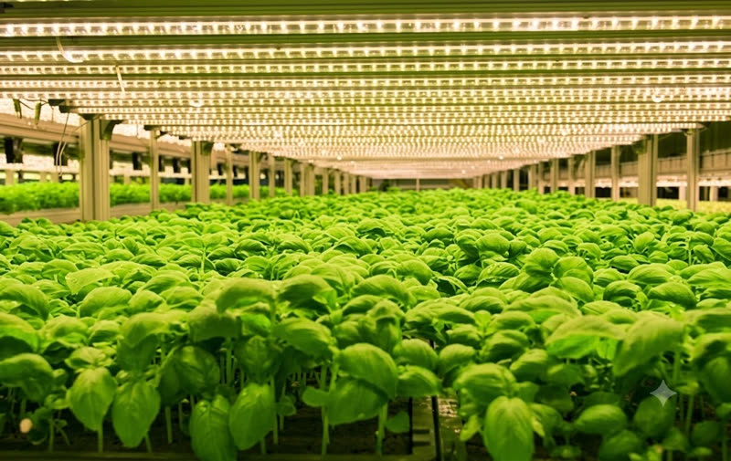

03
Products
재배의 방식을
다시 설계합니다
에이아이박스는 더 완벽한 결실을 위해, 최신 AI 기술을 도입하여 농업의 미래를 그리고 있습니다.
나노소재와 AI 기술로 농업의 재료를 다시 만듭니다.
흙과 비료, 농약에 기대어 온 농업을 나노·바이오 소재로 다시 씁니다.
비료와 농약은 절반으로. 수확량과 품질은 그 이상으로.
식물생리 데이터 기반 처방으로 숙련도에 기대지 않는 농업을 만듭니다.

에이아이박스는 더 완벽한 결실을 위해, 최신 AI 기술을 도입하여 농업의 미래를 그리고 있습니다.
에이아이박스는 더 완벽한 결실을 위해, 최신 AI 기술을 도입하여 농업의 미래를 그리고 있습니다.
에이아이박스는 더 완벽한 결실을 위해, 최신 AI 기술을 도입하여 농업의 미래를 그리고 있습니다.